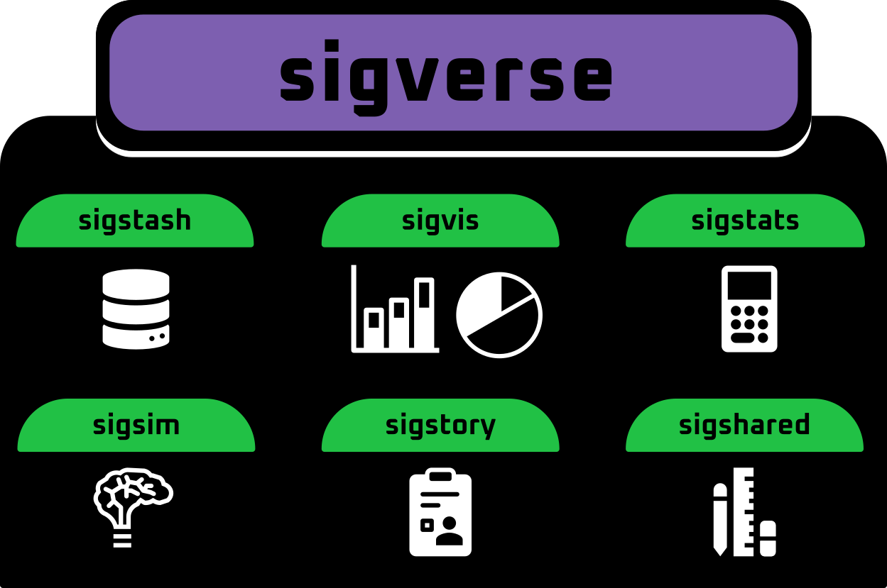
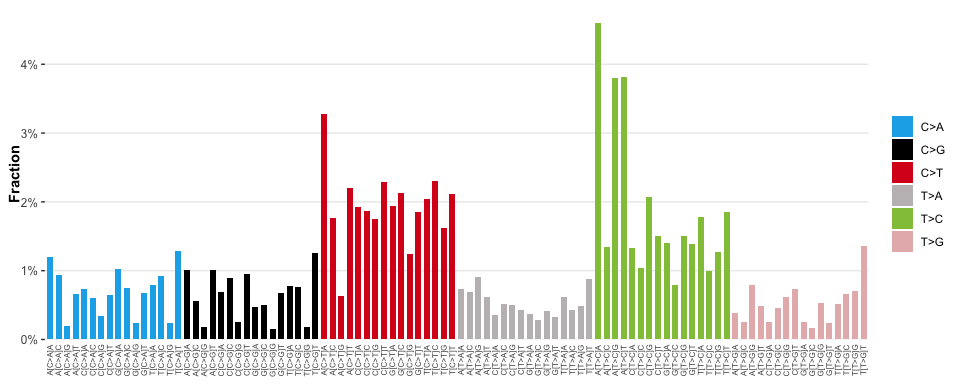
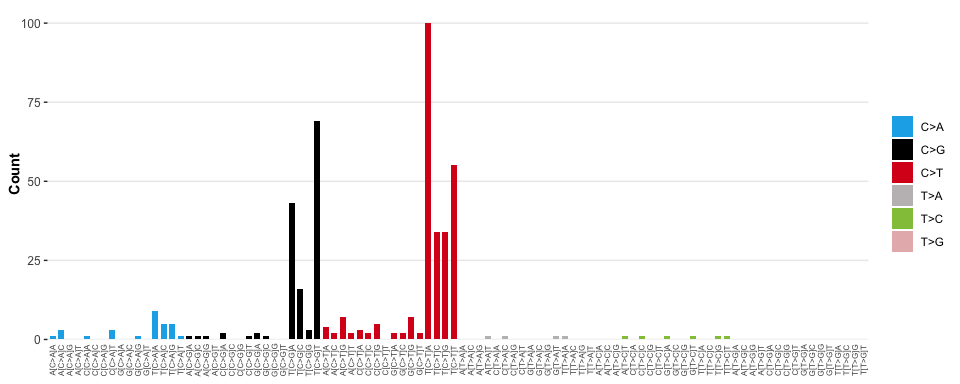
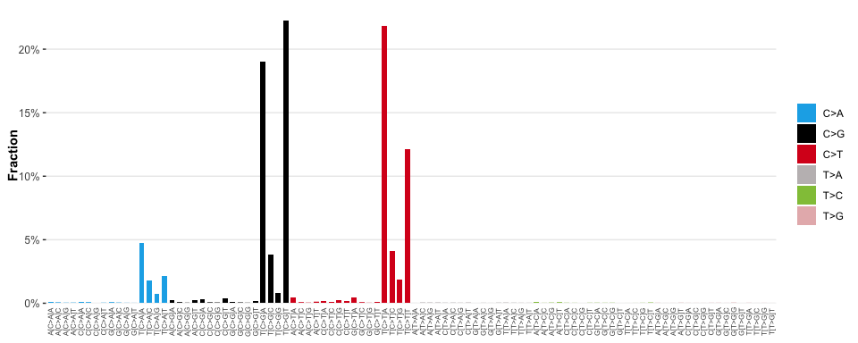

The sigverse simplifies evaluation, exploration, visualisation of mutational signatures in R.

For turnkey mutational signature analysis, see sigscreen.
The sigverse itself does NOT seek to provide custom implementations for running signature analyses.
It simply provides tools for evaluating, exploring, and reporting the results signature analyses done with existing signature analysis frameworks (we recommend sigminer if you’re using R).
WARNING: Sigverse is in early development, and not yet ready for use
Installation
You can install the development version of sigverse from GitHub with:
if (!require("pak", quietly = TRUE))
install.packages("pak")
pak::pak("selkamand/sigverse")Usage
Visualisation
- Visualise Signatures
library(sigverse)
#> ── Attaching core sigverse packages ───────────────────── sigverse 0.0.0.9000 ──
#> ✔ sigshared 0.0.0.9000 ✔ sigstats 0.0.0.9000
#> ✔ sigsim 0.0.0.9000 ✔ sigstory 1.0
#> ✔ sigstash 0.0.0.9000 ✔ sigvis 0.0.0.9000
# Load signatures from sigstash
signatures <- sig_load("COSMIC_v3.3.1_SBS_GRCh38")
# Visualise a single signature
sig_visualise(signatures[["SBS5"]])
#> ✔ All channels matched perfectly to set [sbs_96]. Using this set for sort order
#> ✔ All types matched perfectly to set [sbs_type]. Using this set for sort order
#> ✔ Types matched perfectly to palette [snv_type]
- Visualise Catalogues
Note to access the TCGA catalogues first install the datasets using remotes::install_github("selkamand/TCGAcatalogues")
# Load mutational profile catalogue from the TCGAcatalogues package
library(TCGAcatalogues)
brca_catalalogue <- catalogues_load('BRCA')
# Visualise an observed mutational catalogue
sig_visualise(
brca_catalalogue[['TCGA-BH-A18P-01A-11D-A12B-09']],
class = "catalogue"
)
#> ✔ All channels matched perfectly to set [sbs_96]. Using this set for sort order
#> ✔ All types matched perfectly to set [sbs_type]. Using this set for sort order
#> ✔ Types matched perfectly to palette [snv_type]
- Visualise a Signature Model
The primary output of ANY signature analyse is a model which describes the set of signatures which, when combined with certain weights approximate the observed mutational pattern in a sample. For example the model might look like
Signature1 * 0.2 + Signature2 * 0.3 + Signature3 * 0.5 = Simulated Catalogue that (hopefully) represents the observed profile.
We can visualise a signature model as follows
# Load a signature from sigstash
signatures <- sig_load("COSMIC_v3.3.1_SBS_GRCh38")
# Build a signature model signature 'SBS2' explains 40% of the mutations in a sample, and 'SBS13' explains the remaining 60%
model = sig_combine(signatures, model = c('SBS2' = 0.4, 'SBS13' = 0.6), format = "combined")
# Visualise the model
sig_visualise(model, class = 'model')
#> ✔ All channels matched perfectly to set [sbs_96]. Using this set for sort order
#> ✔ All types matched perfectly to set [sbs_type]. Using this set for sort order
#> ✔ Types matched perfectly to palette [snv_type]
- Visualize a cohort
Warning
Cohort visualisations are not yet available in the sigverse
If you’ve got sequencing results from a cohort, sigvis lets you either.
Visualise the results of a sample of interest in the context of the broader cohort
Visualise the cohort trends
The input to the visualiser is a ‘cohort signature dataframe’ (see sigvis for details)
# Load cohort signature results from sigstash
cohort = sig_load_sigstash_tcga('BRCA')
# Visualise Cohort
sig_visualise_cohort(cohort)
# Contextualize Sample with Cohort Results
sig_visualise_sample_in_cohort(cohort, 'TCGA-D8-A1XU') Reporting
Warning
Interactive sample reports are not yet available in the sigverse
After running a signature analysis on your sample of interest, produce a html report describing the result.
The core report generation engine requires high level information that most signature analyses will output, irrespective of the exact methods used.
In this example we manually define the properties of our model to demonstrate the expected inputs
# Specify your catalogue
observed_catalogue = example_catalogue
# Specify your model
model = c('SBS1' = 0.4, 'SBS2' = 0.5)
# Specify aetiologies of any signatures in your model
aetiology = list(
SBS1 = 'Spontaneous deamination of 5-methylcytosine (clock like signature)',
SBS2 = 'Activity of APOBEC family of cytidine deaminases'
)
# Specify similar samples (optional, only supply if you want to compare to some larger cohort)
similar_samples = data.frame(
sample_id = c('Sample1', 'Sample2', 'Sample3'),
cosine_similarity = c(0.96, 0.95, 0.8)
)
# Produce the html report
sig_story(
observed = observed_catalogue
model = model,
aetiology = aetiology,
similar_samples = similar_samples
)Simulation
Warning
Simulation functions are not yet available in the sigverse
sigsim allows you to simulate mutational catalogues by combining different mutational signatures, plus spike known amounts of noise. This can be useful for benchmarking signature tools.
# Load signatures from sigstash
signatures <- sig_load("COSMIC_v3.3.1_SBS_GRCh38")
# Simulate Signatures
sig_simulate(signatures, c('SBS3' = 0.5, "SBS4" = 0.5))Key Object Types
The sigverse needs to work downstream of many different signature analysis tools. To maximise interoperability all expected inputs are simple dataframes and lists, rather than sigverse specific S3/S4/R8/R7 objects.
All data types used by sigverse packages are described in sigshared documentation
Similar tools
Most signature analysis packages provide their own suite of visualisation and exploration tools. To simplify your software stack, we recommend only using the sigverse for the following reasons:
you run multiple signature analysis tools and want a uniform way of exploring the results
want to benchmark signature analysis packages
Find missing functionality (e.g. cohort signature result exploration / no reporting modules)
Links to sigverse-adjacent packages
- TCGAcatalogues for loading TCGA sample catalogues